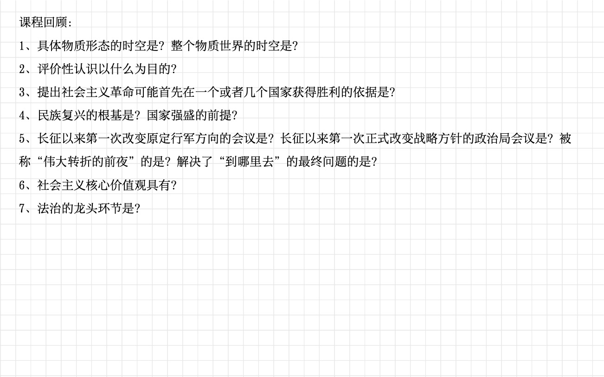

课程回顾原图

1、具体物质形态的时空是？整个物质世界的时空是？
具体物质形态的时空是有限的，整个物质世界的时空是无限的；时空既是有限的又是无限的，是有限与无限的统一。
2、评价性认识以什么为目的？
评价性认识以客体对主体的意义（价值）为对象，目的在于指导实践、满足主体的需要。
3、提出社会主义革命可能首先在一个或者几个国家获得胜利的依据是？
依据是资本主义经济政治发展不平衡规律。帝国主义国家之间发展不平衡、矛盾尖锐，社会主义革命可能在帝国主义链条最薄弱的环节首先取得胜利。
4、民族复兴的根基是？国家强盛的前提？
国家安全是民族复兴的根基，社会稳定是国家强盛的前提。
5、长征以来第一次改变原定行军方向的会议是？长征以来第一次正式改变战略方针的政治局会议是？被称“伟大转折的前夜”的是？解决了“到哪里去”的最终问题的是？
依次是：通道会议、黎平会议、猴场会议、榜罗镇会议。
6、社会主义核心价值观具有？
社会主义核心价值观具有先进性、人民性、真实性。
7、法治的龙头环节是？
科学立法是法治的龙头环节（立法是法治的龙头环节）。